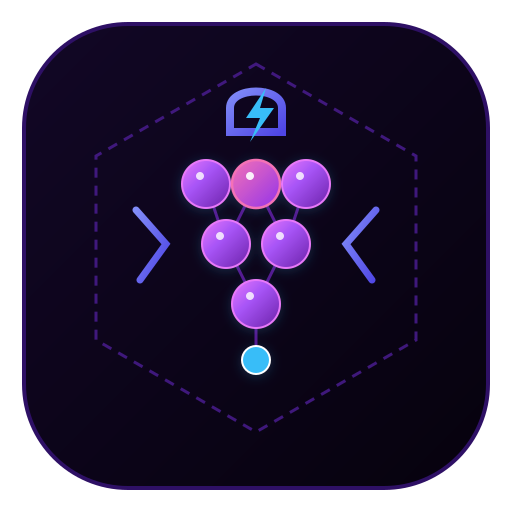

PG Harness · 首次配置向导
跳过，稍后配置
欢迎
欢迎使用 PG Harness
你的自主编码智能体运行时平台 · 零 Native 依赖 · 可审计 · 沙箱红线
🔌
零依赖接入
任意 OpenAI 兼容端点，填 Key 即用，无需编译环境
🧠
自主 ReAct 循环
读码 → 判断 → 修改 → 测试 → 提交，全流程可审计回放
🔒
沙箱红线
权限三档自由切换，硬性红线（推送/关机/格式化）永不放行
接下来只需两步：
接入一个模型
+
选择一个本地项目目录
，约一分钟。 每一步都会自动保存，中途刷新页面可从断点继续。
开始配置 →
第一步 · 接入模型
Provider 名称
Base URL（OpenAI 兼容端点）
API Key
🔍 探测可用模型
（先探测，再选择默认模型）
ℹ️ 为什么需要：没有模型，Agent 无法思考。
API Key 使用 AES-256-GCM 加密存储在本机，明文永不出机、不入日志。
← 上一步
保存并继续 →
第二步 · 选择工作区
本地项目绝对路径
📁 浏览…
ℹ️ 为什么需要：Agent 的一切读写都
物理锁定在此目录内
，越界访问会被沙箱拦截。之后可随时在「工作区管理」添加更多项目。
← 上一步
保存并继续 →
🎉
配置完成，准备就绪
✅ 模型
deepseek-chat（DeepSeek）
✅ 工作区
G:\Projects\my-app
📍 接下来你可以：
💬 在对话里直接下指令——建议从「
阅读项目结构并总结
」开始，验证模型连通
🔌 加更多模型：左侧导航 →
Provider 资产池
📁 加更多工作区：左侧导航 →
工作区管理
（支持应用内目录浏览器）
🛡️ 权限三档随时可调：对话框右上角下拉（只读 / 标准 / 完全授权）
← 上一步
🚀 进入工作台
每一步自动保存 · 刷新可从断点继续